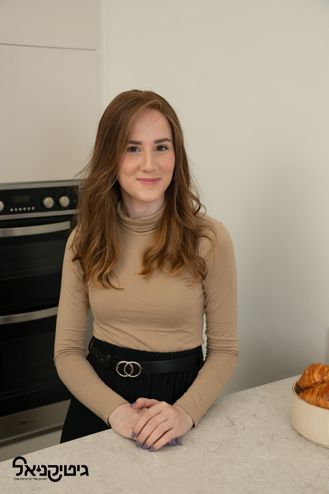

נעים להכיר
התמונה של גיטי

שמי גיטי קניאל. אני הנדסאית אדריכלות, מתכננת ומעצבת בתים פרטיים.
אני מאמינה שבית טוב לא נמדד רק במראה שלו, אלא באופן שבו הוא משרת את המשפחה שחיה בו. לכן כל תהליך מתחיל בהיכרות עם אורח החיים שלכם, ורק אחר כך בתכנון.
הבית שלכם נבנה פעם אחת, אבל תחיו בו שנים.
רגע לפני שמתחילים
אם יש משהו שלמדתי לאורך השנים, הוא שבית יפה ≠ בית שנח לחיות בו.
הוא לא מתחיל בבחירת מטבח, ולא בגוון של הריצוף או בגוף התאורה.
הוא מתחיל הרבה קודם. בשאלות הנכונות.
איך אתם באמת חיים? מה חשוב לכם ביום יום?
ואיך אפשר לתכנן היום בית שישרת אתכם גם בעוד שנים קדימה?
המטרה היא לא רק שתצאו עם תכנית. המטרה היא שתיכנסו לבית שירגיש נכון גם בעוד עשר שנים.
מה אומרים עליי